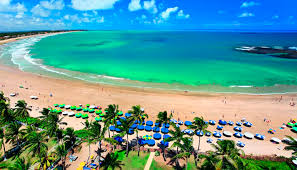
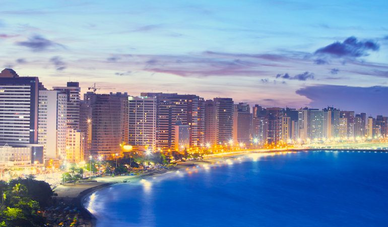
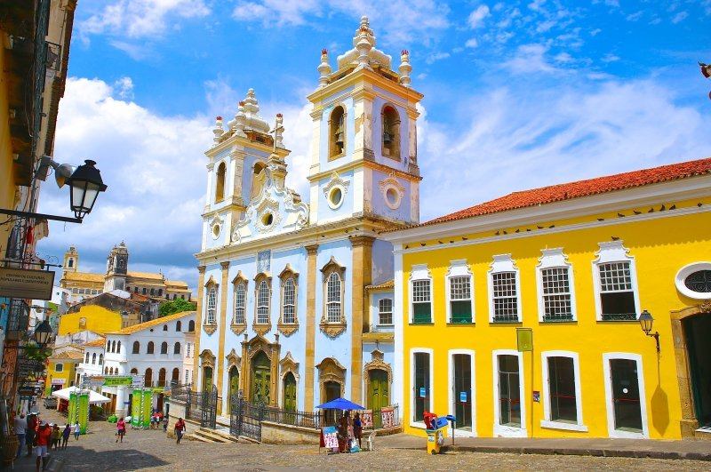

Natal

Capital do Rio Grande do Norte, Natal é conhecida pelas extensas dunas de areia costeiras e pelo Forte dos Reis Magos, uma fortaleza portuguesa do século XVI na foz do rio Potengi
Fortaleza

Capital do Ceará, Fortaleza é uma das mais belas cidades do nordeste, conhecida por suas praias repletas de falésias avermelhadas, palmeiras, dunas e lagoas.
Salvador

Capital da Bahia, salvador é um dos mais lindos pontos turisticos brasileiros, marcada por suas tradiçoes, forte cultura e arquitetura diferenciada.